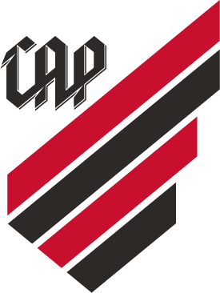
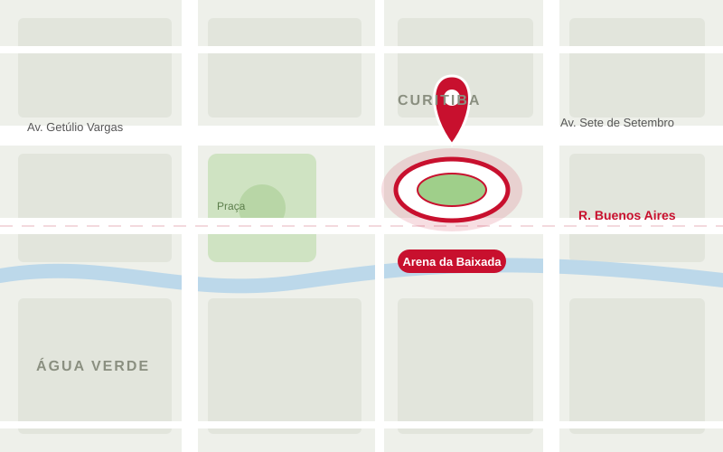

Sócio-Torcedor
Apoie o clube, garanta vantagens exclusivas e participe de ações especiais para quem veste a camisa.


Tudo o que você precisa para viver o clube de perto.
Apoie o clube, garanta vantagens exclusivas e participe de ações especiais para quem veste a camisa.
Garanta seu lugar na Arena da Baixada e acompanhe os próximos jogos do Athletico ao vivo.
Camisas, agasalhos e acessórios com a marca do Furacão para você mostrar sua paixão em qualquer lugar.
Torne-se sócio-torcedor e tenha vantagens exclusivas.
Quero ser sócio
Endereço: Rua Buenos Aires, 1260
Bairro: Água Verde
Cidade: Curitiba – PR
CEP: 80250-070
Em dias de jogo o trânsito na região costuma ser intenso. Chegue com antecedência e, se puder, prefira o transporte público.
Basta acessar a área do Sócio aqui no site, escolher o plano que mais combina com você e concluir o cadastro. Depois disso, é só aproveitar as vantagens exclusivas do programa.
A Arena da Baixada fica na Rua Buenos Aires, 1260, no bairro Água Verde, em Curitiba – PR. Veja o mapa na seção "Onde estamos?".
Os ingressos podem ser adquiridos pela página de Ingressos do site ou nas bilheterias da Arena da Baixada. Fique de olho nas datas de venda de cada partida.
Na Loja Oficial do clube, disponível pelo menu do site, você encontra camisas, agasalhos e acessórios com a marca do Furacão.